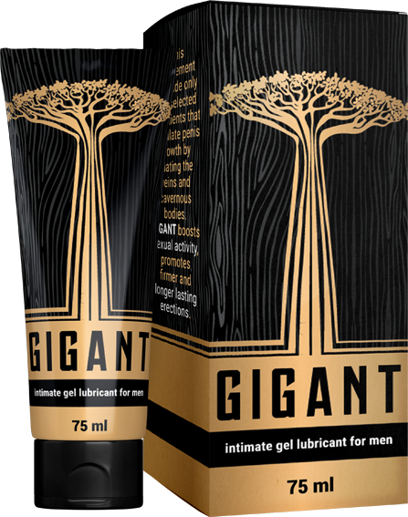

¿Dónde conocer a una chica? ¡Por supuesto en Internet! En la calle, puede correr de ti ya que no está lista para la comunicación real, pero en el mundo virtual las posibilidades de éxito crecen exponencialmente. Además, en el mismo Tinder puedes elegir una compañera en los parámetros, y no jugar a la ruleta cuando te encuentres con ella en un bar. Las chicas, por cierto, prefieren la comunicación virtual antes de la intimidad, para que no haya pequeñas sorpresas.
Después de conocerse, sigue un encuentro real y si lograste impresionarla, entonces después de 2-3 citas (o, tal vez, en la primera), la chica está lista para el sexo. Y aquí lo más importante es no fracasar.

Cuanto más grande es el pene de un hombre, más tiempo y más brillante es no solo su orgasmo de él, sino también de ella. Probablemente por esola clave del éxito entre las chicas es el tamaño del pene, y no el de la cartera. Esto se confirma por las consultas en los motores de búsqueda, donde el público femenino elige videos y fotos con grandes y gruesas.
¿Qué pasa si la naturaleza no te ha dado un tamaño impresionante?
No te preocupes, agrandar el pene y añadir al sexo más calor es más que real. Y aquí están las opciones más populares:
La primera es la operación
Cuesta de $20,000 a $50,000
¿Cómo va?
En la primera etapa, se disecciona el ligamento que se encuentra entre el hueso púbico y los tejidos del pene. En la segunda etapa, se instala un extensor en las bisagras, que se fija y aumenta gradualmente la tracción. Durante seis meses o un año, se puede agrandar el pene en 2-3 centímetros. El grosor también aumenta. Es una técnica bastante costosa y dolorosa con muchas contraindicaciones (incluida la abstinencia prolongada del sexo). Existe el riesgo de complicaciones graves, como pérdida de sensibilidad e impotencia.

La segunda son pompas y ejercicios
Cuestan de $500 a $2,000
Pompas. El efecto mecánico en el pene causa un flujo de sangre y una ligera hinchazón, por lo que durante un tiempo el pene parece más grande. Pero pasa rápidamente. Si usas pompas con frecuencia, puedes dañar el tejido del pene, por lo que se deforma o comienzan los problemas de erección.

Ejercicios. La técnica Jelking es un automasaje desde la base del pene hasta la cabeza con un retraso en la eyaculación. Al igual que otros métodos DIY de aumento, el ejercicio no tiene evidencia de eficiencia, pero las complicaciones están ahí: dolor y deformidades. Y para no lesionarse, necesitas una consulta con un especialista que no es tan fácil de encontrar.
La tercera son pastillas
Cuestan de $500 a $3,000
Las pastillas de alargamiento de pene son suplementos nutricionales hechos de una mezcla de vitaminas, hierbas y hormonas. Ningún remedio de este tipo cambia el tamaño del pene, todo es un juego en la confianza de los desesperados. Además, no están registrados como medicamentos, lo que significa que nadie controla su producción. Por lo tanto, no se sabe qué hay realmente en la pastilla (mejor que no esté nada). Pero, desafortunadamente, la mayoría de las veces es una mezcla salvaje de hormonas y sildenafil, lo que aumenta el riesgo de numerosas enfermedades cardiovasculares e incluso ataques cardíacos. Depende.
La cuarta son geles y lubricantes
Cuestan de $5 a $500
Es la opción más económica, pero más segura y eficiente. Pero aquí tienes que tener cuidado y saber qué tomar. En Internet y sex shops, puedes comprar un lubricante del cual puedes tener una quemadura química. Y para que esto no suceda, hablemos de la novedad para la ampliación del pene: gel-lubricante .
¿Por qué ? Este es el primer gel íntimo a base de sustancias solubles en agua que estimulan el crecimiento del pene al dilatar las venas y los cuerpos cavernosos.
Se ha demostrado que
si estimula regularmente la circulación sanguínea y aumenta la presión dentro del pene, entonces no solo será más grande, sino también más ancho
En eso te ayudará . Lo primero a que se debe prestar atención es la composición:
- ácido hialurónico: ayuda a prolongar y mejorar las sensaciones placenteras durante el contacto sexual;
- extracto de menta: hace que el pene sea más sensible, aumenta la potencia;
- extracto de manzanilla: ayuda a que los tejidos del pene se vuelvan más elásticos y anchos;
- cafeína: promueve la saturación de oxígeno de las células, y esto aumenta el flujo sanguíneo y el pene comienza a crecer naturalmente.
Con un conjunto tan impresionante de ingredientes, los fabricantes de gel aseguran que en un mes tu pene crecerá en 5 cm. Olvidarás lo que es el sexo rápido y aburrido.
Entre las ventajas están también la falta de hormonas, la seguridad, la facilidad de uso. Proporciona una penetración más profunda y también excita a ti y a tu pareja.
Cómo convertirse en un gurú del sexo
Es como ganar la lotería o sacar el único tema aprendido en el examen. Con una polla grande, ya no se necesita ningún esfuerzo. Al enterarse de tu impresionante tamaño, cualquier chica estará lista para organizar un espectáculo sexual al que envidiarían aun las estrellas porno.
¿Sueñas con esto? Luego toma , aplícalo con seguridad en el pene y comienza a hacerte un simple masaje desde la base hasta la cabeza.

Con el uso diario, los resultados serán los siguientes:
- 7-10 días: el pene aumentará en 1 cm y aumentará la sensibilidad;
- 20 días: el sexo será 2 veces más DURADERO y más agradable, porque el pene ya ha crecido en 3 cm;
- 30 días: erección fuerte, orgasmos largos y pene grande (aumento de hasta 5 cm de largo y hasta 3 cm de ancho).
Si te parece que ya lo has intentado todo, y el resultado es cero, es hora de probar . Ella seguramente disfrutará de un GRAN CAMBIO.
tengo que intentarlo, me gustaría tener unos centímetros más.
yo también estoy probando . el pene ha crecido en 5 cm, ya no crece, y ya no lo necesito, mi mujer ya se queja de que lo tengo demasiado grande. también es un buen remedio para la erección. lo aplicas y pa´lante para dos horas. en resumen, ahora lo tengo suficiente para mi mujer y dos amantes.
Bueno, si realmente funciona, entonces es una bomba. Aunque no necesito molestarme, por naturaleza tengo 19cm.
Mi novio lo usa, y yo misma se lo compré. Tenía un pene de 12 cm, me faltaba y le dije eso directamente. Y después de que probó , ¡ya tenía 18 cm! es incluso más que mi ex. Ahora estoy satisfecha con todo.
Recientemente aprendí sobre , pero tenía miedo de pedirlo, pensé que era un timo. Ahora lo uso durante una semana, el aumento es +1cm. Si así seguimos, dentro de dos meses tendré un tamaño enorme.
¿Y el pene debe estirarse de alguna manera? si no, ¿cuál es el aumento mínimo en un mes?
Por cierto, también simplemente froté , no estiré nada, tuve en un mes +3cm.
¿Y no hay sensaciones dolorosas o incomodidad con el agrandamiento del pene? Es que los tejidos se estiran.
está bien, no tengas miedo. He usado solo como lubricante, pero resultó ser una pequeña bonificación: que mi polla creció.
ya casi me atreví a la cirugía, así me cansé de mis 11 cm. voy a pedir , quizás me ayude.
Tengo un amigo que se sometió a una cirugía de aumento. Ahora no se le levanta en absoluto…
Sí, hay tales efectos secundarios de la cirugía, he oído de esos. En general es un mecanismo muy complejo, aquí para recortar, allí para eliminar, aquí para agregar. Por qué pagar más, si es realmente efectivo, se puede hacer sexo de inmediato, no hay que abstenerse durante varios meses.